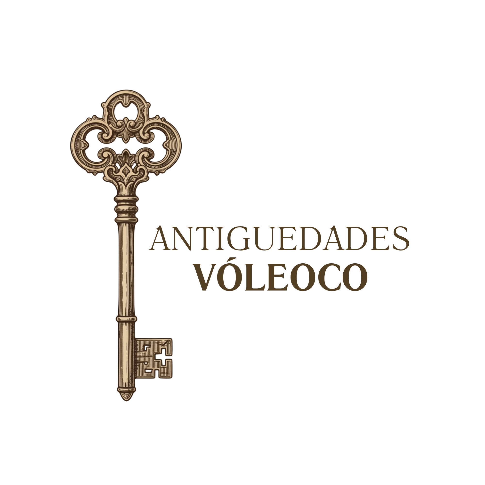

VÓLECO nació en 1999 como un pequeño taller familiar dedicado a recuperar piezas con historia.
Con el tiempo, nuestra pasión por el mobiliario antiguo, el arte y los objetos únicos nos llevó a crear una tienda donde cada pieza está seleccionada por su carácter, autenticidad y belleza.
Hoy seguimos trabajando con el mismo cuidado artesanal, ofreciendo colecciones que combinan tradición, diseño y memoria.